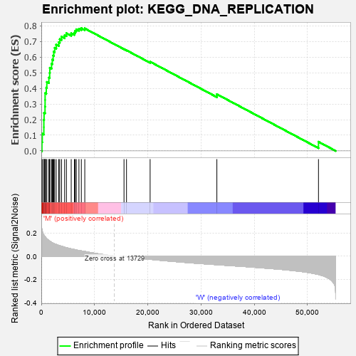
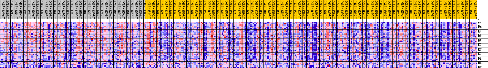
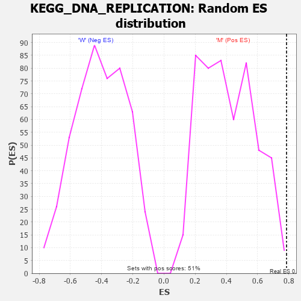

| Dataset | MUC16.MUC16.cls#M_versus_W.MUC16.cls#M_versus_W_repos |
| Phenotype | MUC16.cls#M_versus_W_repos |
| Upregulated in class | M |
| GeneSet | KEGG_DNA_REPLICATION |
| Enrichment Score (ES) | 0.785535 |
| Normalized Enrichment Score (NES) | 1.9008703 |
| Nominal p-value | 0.003944773 |
| FDR q-value | 0.043910533 |
| FWER p-Value | 0.156 |

| PROBE | DESCRIPTION (from dataset) | GENE SYMBOL | GENE_TITLE | RANK IN GENE LIST | RANK METRIC SCORE | RUNNING ES | CORE ENRICHMENT | |
|---|---|---|---|---|---|---|---|---|
| 1 | MCM6 | na | 118 | 0.227 | 0.0564 | Yes | ||
| 2 | RPA1 | na | 181 | 0.213 | 0.1102 | Yes | ||
| 3 | FEN1 | na | 479 | 0.181 | 0.1516 | Yes | ||
| 4 | POLE2 | na | 480 | 0.181 | 0.1984 | Yes | ||
| 5 | POLD2 | na | 521 | 0.178 | 0.2436 | Yes | ||
| 6 | MCM4 | na | 700 | 0.167 | 0.2835 | Yes | ||
| 7 | MCM2 | na | 714 | 0.166 | 0.3261 | Yes | ||
| 8 | MCM5 | na | 716 | 0.166 | 0.3690 | Yes | ||
| 9 | LIG1 | na | 937 | 0.153 | 0.4046 | Yes | ||
| 10 | RFC5 | na | 1039 | 0.148 | 0.4411 | Yes | ||
| 11 | POLA2 | na | 1420 | 0.134 | 0.4687 | Yes | ||
| 12 | RPA2 | na | 1572 | 0.130 | 0.4994 | Yes | ||
| 13 | RNASEH2A | na | 1603 | 0.128 | 0.5321 | Yes | ||
| 14 | PRIM2 | na | 1923 | 0.119 | 0.5569 | Yes | ||
| 15 | POLE | na | 2065 | 0.115 | 0.5840 | Yes | ||
| 16 | RFC1 | na | 2222 | 0.111 | 0.6099 | Yes | ||
| 17 | PRIM1 | na | 2340 | 0.109 | 0.6359 | Yes | ||
| 18 | RFC2 | na | 2513 | 0.105 | 0.6600 | Yes | ||
| 19 | RFC3 | na | 2803 | 0.100 | 0.6806 | Yes | ||
| 20 | MCM3 | na | 3278 | 0.092 | 0.6959 | Yes | ||
| 21 | POLE3 | na | 3467 | 0.089 | 0.7156 | Yes | ||
| 22 | PCNA | na | 3798 | 0.084 | 0.7314 | Yes | ||
| 23 | DNA2 | na | 4378 | 0.077 | 0.7408 | Yes | ||
| 24 | SSBP1 | na | 4718 | 0.072 | 0.7534 | Yes | ||
| 25 | RFC4 | na | 5619 | 0.062 | 0.7533 | Yes | ||
| 26 | RPA3 | na | 6214 | 0.057 | 0.7572 | Yes | ||
| 27 | POLA1 | na | 6362 | 0.055 | 0.7687 | Yes | ||
| 28 | MCM7 | na | 6575 | 0.053 | 0.7785 | Yes | ||
| 29 | POLD1 | na | 7067 | 0.048 | 0.7821 | Yes | ||
| 30 | POLD3 | na | 7521 | 0.045 | 0.7855 | Yes | ||
| 31 | RNASEH1 | na | 8167 | 0.040 | 0.7841 | No | ||
| 32 | POLE4 | na | 15533 | -0.002 | 0.6514 | No | ||
| 33 | RNASEH2C | na | 16002 | -0.005 | 0.6442 | No | ||
| 34 | RNASEH2B | na | 20438 | -0.027 | 0.5709 | No | ||
| 35 | POLD4 | na | 32971 | -0.073 | 0.3630 | No | ||
| 36 | RPA4 | na | 52056 | -0.157 | 0.0581 | No |

